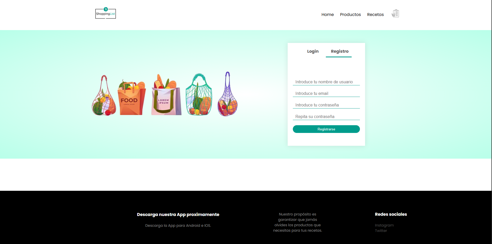
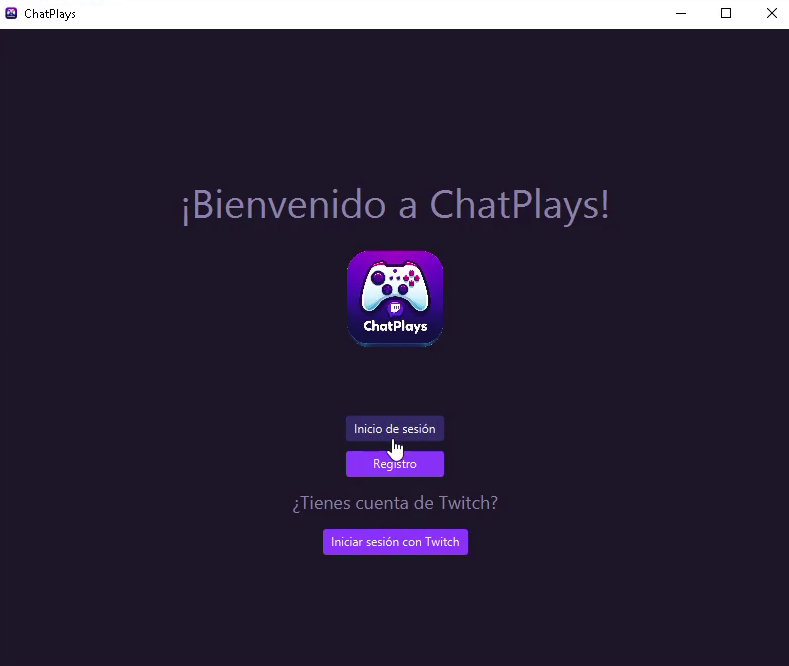
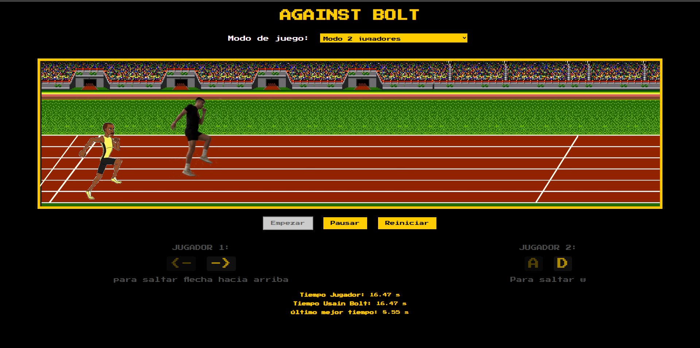

Hola,
soy Pablo Morán,
Desarrollador Web
Soy un desarrollador web también multiplataforma. Me encanta desarrollar cosas por mi cuenta y estar en constante aprendizaje.
Si prefieres ir a lo fácil te dejo aquí mi CV para que puedas descargarlo en formato PDF.
Descargar Currículo en PDF
Experiencia
Desarrollo de Aplicaciones Web
Septiembre 2024 - Junio 2025CIFP CARLOS III
Desarrollador Junior FCT - ADDAW
abril 2024 - Junio 2024Desarrollo de Aplicaciones Multiplataforma
Septiembre 2022 - Junio 2023CIFP CARLOS III
Técnico Superior FCT - Asamblea Regional de Murcia
Septiembre 2021 - Diciembre 2021Administración de Sistemas informáticos y Redes
Septiembre 2018 - Junio 2021CIFP CARLOS III
Técnico de Grado Medio FCT - Hospital Universitario Rosell
Abril 2018 - Junio 2018Sistemas microinformáticos y redes
Septiembre 2016 - Junio 2018CIFPU Hespérides
Lenguajes
HTML / CSS
JavaScript
React
Laravel / PHP
MySQL / Firebase
Portfolio

Aplicación web
Aplicación web desarrollada en PHP para la gestión de listas de la compra y recetas.
Ver en GitHub

Aplicación de Escritorio
Aplicación desarrollada en JavaFX que se encarga de conectar el chat de un canal de Twitch con el propio creador para que ambos jueguen juntos.
Ver en GitHub

Juego 100m Carrera
Juego multijugador local hecho con HTML, CSS y JavaScript. Incluye "IA"
Ver en GitHubContacto
Email: moranpablolopez@gmail.com
Teléfono: +34 633 162 973